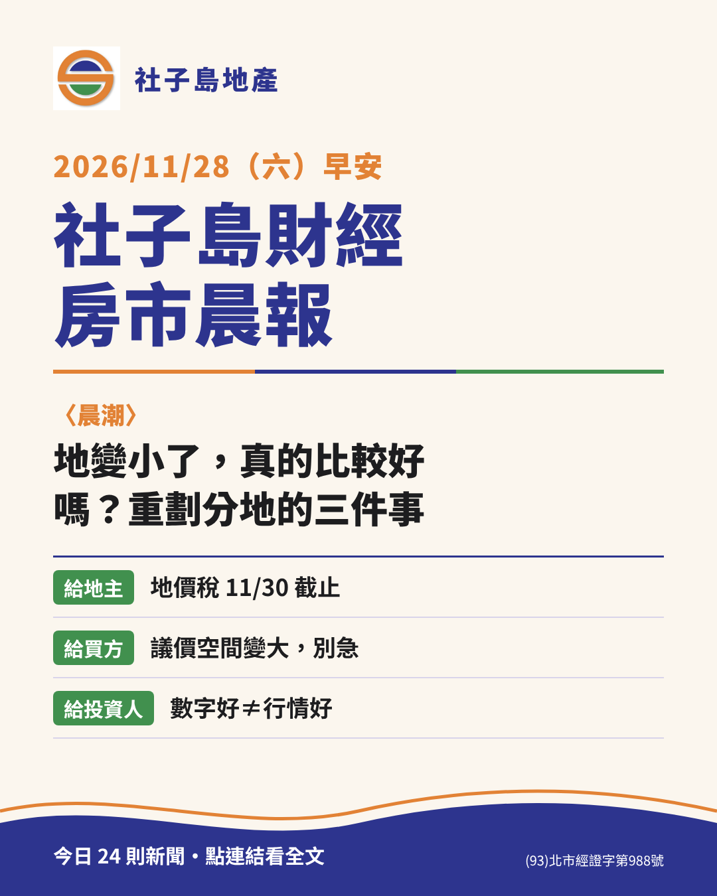

2026/11/28 (六) 早安
社子島財經房市晨報｜地變小了，真的比較好嗎？重劃分地的三件事
北士科又有新的商辦要蓋：經濟日報報導，遠雄與 24 位地主合建的北投區基地，就在北士科新洲美段，約 807 坪。另一頭，全台十大重劃區還有約 2.2 萬戶新屋等買家，桃園就占了四席；重劃完成、地變建地，不等於房子就賣得掉，〈今日一題〉來談這件事。主計總處把今年經濟成長上修到 13.28%，人均 GDP 首度破 4 萬美元。週六早上，〈晨潮〉回答阿公昨天的問題：重劃後地變小了，真的比較好嗎？
〈潮汐表〉今天的三道潮水
- 給地主地價稅後天（11/30，週一）截止，還沒繳的，今明兩天記得繳。
- 給買方釋出的物件變多、議價空間變大，看清楚再談，不必急。
- 給投資人經濟成長上修，外資卻連 10 天賣超，數字好不等於行情好。
〈晨潮〉正事白話講
地變小了，真的比較好嗎？重劃分地的三件事
昨天傍晚在威靈廟前，阿公看著台南魚塭要重劃的新聞問我們：「地分轉來比原本較細，人講地價會起，敢真正有較好？若是分著的位所，比原本較歹用，欲按怎？」阿公，這個問題問得好。我們分三件事，慢慢講。
第一件，地為什麼會變小。市地重劃要開路、做公園、埋水溝和管線，這些公共設施用地和工程費，由重劃區裡的地主按比例一起負擔，費用的部分通常用「抵費地」折抵。《平均地權條例》第 60 條規定，這些共同負擔以重劃區總面積的 45% 為上限。所以分回來的面積變小，是正常的。
第二件，變小了為什麼還可能比較好。重劃前的農地、魚塭，常常沒有路、不能蓋房子；重劃後分回來的，是臨路、有排水、可以建築的土地。分配的時候，是依重劃前每一筆土地的地價比例來分，不是只看面積。以台南永康的重劃區為例，地產天下報導，專家估算重劃前農地每坪約 13～15 萬元，重劃後建地行情可到 30～35 萬元。面積少了，價值不一定少；但每一區、每一塊地都不一樣，不能拿別人的數字直接套在自己身上。
第三件，分到的位置不好用怎麼辦。依《市地重劃實施辦法》第 31 條，分配位置原則上照重劃前土地的相關位次，分在原街廓、面臨原有路街線的地方，不是隨便抽籤。分配結果出來以後，主管機關會公告 30 天。依《平均地權條例》第 60 條之 2，覺得不合理，可以在公告期間內用書面提出異議，主管機關先調處；調處不成，再報上級主管機關裁決。重點是：看到公告就要去看，有意見要在期限內用書面講，不要等過了才說。
重劃分地小抄
- 變小｜公共設施與費用共同負擔，上限是重劃區總面積 45%
- 價值｜依重劃前各筆土地地價比例分配，不只看面積
- 位置｜原則上照原位次，分在原街廓、面臨原有路街線
- 有意見｜分配結果公告 30 天內書面異議，先調處、再裁決
阿公，社子島走的是區段徵收，不是市地重劃，抵價地也有自己的分配規則，到時候一樣會公告、一樣可以表示意見。我們會陪鄉親一起看。今天是週末，最後在〈廟口泡茶區〉，阿公還有話要說。
——社子島地產團隊
〈今日一題〉
重劃完成，房子就賣得掉嗎？十大重劃區 2.2 萬戶的提醒
經濟日報引用 591 新建案統計，全台待售量前十大的重劃區，在線銷售的預售屋與新成屋，待售合計約 2.2 萬戶。桃園就占了四席，客運園區在線 24 個建案、待售約 2,911 戶居首，A20 興南、A7 體育大學站重劃區也都超過 2,000 戶；台中捷運機廠特區、十三期重劃區破千戶，林口也上榜。
這說明一件事：土地從農地、魚塭變成建地，價值往上走，是重劃或區段徵收帶來的；但建地上的房子能不能順利賣掉、賣到什麼價錢，還要看同一時間有多少房子一起推出、有多少人真的要買。報導也提到，待售量高不一定代表賣壓沉重，有些區是因為建商最近推案比較集中。
跟社子島有什麼關係？社子島未來走區段徵收，地主領回的是抵價地，開發完成後，很多地主會在差不多的時間拿到建地。到時候，是自己蓋、找建商合建、還是賣地，每一條路的時機和條件都不一樣。我們不預測價格，只提醒一件事：先把自己的持分、面積、共有人整理好，選擇的時候才不會被時間追著跑。
資料：經濟日報 2026-11-27「賣壓沉重！十大重劃區待售破2.2萬戶」（591 新建案統計，搜尋摘要）、ETtoday 房產雲同題報導。解讀為本團隊意見，不構成投資建議。
主商圈：社子島・北士科・關渡洲美平原1 則
11/26 我們報過遠雄與北投 24 位地主簽合建的公告；經濟日報這次寫明，基地在北士科新洲美段、約 807 坪，預計投入營建成本約 22.78 億元，規劃商辦、2030 年推案
大台北・機捷沿線3 則
樹林搭台鐵不到 20 分鐘到北車，新北大巨蛋落腳樹林，但動工還要等；北市預售最低價回到 6 字頭，壹蘋提醒：每坪百萬以下的新案只剩一成；機捷通車將滿十年，沿線房價全線上漲，新莊副都心 A4 漲幅排第三
其他縣市：桃園・台南・高雄（離台北由近到遠）5 則
桃園預算千萬內，放寬屋齡找中古屋，中壢不到 900 萬能買 3 房；台南 9 月房價指數月增 0.06%、年減 0.86%，低檔盤整；高雄預售買氣轉向自住，3 房比重上升，但台積電概念區也有人讓利求售；舊左營民間投資近千億
稅務與法律實務2 則
兩則都和「家裡的老房子」有關：同一間老家、同一次賣掉，從媽媽直接繼承的持分和從爸爸那裡再繼承的持分，適用的稅制不一樣；房地登記在女兒名下，法院認定是借名登記，父親過世 11 年後仍被補遺產稅。家裡的地怎麼登記、怎麼繼承，早一點弄清楚。實際以稅捐機關公告為準
全台房市・政策3 則
591 統計全台十大重劃區待售約 2.2 萬戶，桃園占四席（詳見〈今日一題〉）；住展雜誌說，房市要轉機，先看股市穩不穩、房貸鬆不鬆；屋主釋出的物件變多，議價空間也變大
人口與居住2 則
全台一年少了約 10 萬人，家戶數卻多了約 9.9 萬戶；一人宅也大增 62.8 萬。人變少、戶變多，小坪數的需求跟著上來
生活與天氣2 則
今天晴到多雲，東北季風增強，北部清晨約 15、16 度，出門帶件薄外套；入夜後再降溫，下週一起轉晴回暖。週末輕鬆讀：一位名人分享的買房四要訣
今日財經大事6 則
主計總處上修今年經濟成長至 13.28%，人均 GDP 今年約 4.68 萬美元、明年估破 5 萬；台股昨天漲 156 點、收 39,308 點，週線大漲 3,274 點，但外資連 10 天賣超；新台幣收 32.935 元；美股黑色星期五科技股反彈，台積電 ADR 漲逾 3%
〈阿公講古〉
週六早上，公園的榕樹下，風有點涼。阿公把外套拉鍊拉到最上面，坐在老位子。
「這禮拜，恁講了夕陽、講了洲美的田，閣講重劃分地。」阿公數著手指頭，「講遐濟，阮老歲仔聽甲頭殼攏滿滿。」
旁邊下棋的老朋友笑他：「你嘛會使先揀一項來做就好。」
阿公點點頭，轉過來問我們：「若按呢，恁講的這些，佗一項上要緊，阮應該先去辦？」
阿公的問題，我們明天回答。
〈廟口泡茶區〉
阿公從公園走回廟口，熱茶剛好泡開。重劃也好、區段徵收也好，分回來的地在哪裡、好不好用，都要一筆一筆看。
若您正在找一塊值得耕耘的地，告訴我們您想做什麼，我們幫您先篩過一輪。
也想問問您：家裡的地，現在是誰的名字、有幾位共有人，您清楚嗎？打個電話告訴我們，我們陪您從第一步開始整理。
不急著成交。我們是守在堤邊的人，守著每一塊土地的權益，直到把它交到願意耕耘它的人手上。
📞 歡迎先來電 0922-252-969先通個電話聊聊，再約時間來廟口喝茶。
 掃描 QR code，加 LINE 好友LINE ID：@shezidao💬 加 LINE
掃描 QR code，加 LINE 好友LINE ID：@shezidao💬 加 LINE
社子島地產團隊｜service@shezidao.com.tw
台北市士林區延平北路九段288號
週一至週六 9:30–18:00（週四 9:30–13:30），週日公休📞 來電 0922-252-969
本站由社子島地產開發有限公司經營，為民間不動產資訊網站，非臺北市政府官方網站；政府公告請以臺北市政府與地政局網站為準。
本期新聞由社子島地產團隊自中央社、自由財經、自由時報地產天下、經濟日報、聯合新聞網、工商時報、壹蘋新聞網、ETtoday新聞雲 等來源收集，標題照原文，點擊即可開啟原始報導；新聞依「主商圈 → 大台北 → 其他縣市（離台北由近到遠）→ 稅務與法律實務 → 全國主題」排列，當天沒有新報導的分類不列出。〈晨潮〉法條依《平均地權條例》第 60 條、第 60 條之 2 與《市地重劃實施辦法》第 31 條（依全國法規資料庫與臺北市法規查詢系統之搜尋摘要），台南永康地價引自自由時報地產天下 2026-11-11 報導；〈今日一題〉資料取自經濟日報報導，解讀為本團隊意見。〈晨潮〉〈今日一題〉〈阿公講古〉為本團隊之參考意見，不構成投資或法律建議，亦不代表支持任何候選人。〈阿公講古〉的阿公，是我們依島上長輩的身影寫成的人物。